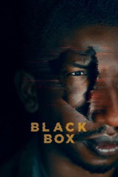

País:Estados Unidos, 100 minutos.
Idiomas:Inglés
GénerosTerror, Ciencia Ficción
Director/es:Emmanuel Osei-Kuffour, Jr.
Guionistas:Stephen Herman, Emmanuel Osei-Kuffour, Jr.
Códec de vídeo:Unknown
Número: 121


Certificación:NR
Argumento:
Un hombre que lucha por recuperar la memoria después de sobrevivir a un trágico accidente automovilístico. Desesperado por volver a ser él mismo mientras intenta criar a su hija, recibe un tratamiento experimental que lo ayuda a indagar en un pasado que de repente se siente demasiado oscuro para ser el suyo.
Reparto
Medio: Archivo de video,
Localización: D:\Multimedia\Películas\La caja negra (2020)\La caja negra (2020).mkv
Prestado: No
Rel. aspecto: Unknown